Metric macOS版
適用於macOS、內建節拍器的視窗式時間與頻率工具組。能依速度算出延遲時間、計算FM比率與邊帶、讓LFO對上拍子、替取樣移調，視窗可自由調整大小，能開在DAW旁邊。支援Siri、Shortcuts和Notification Center小工具。
- 節拍器，含擊拍測速與視覺節拍
- BPM → ms / Hz 轉換器（基本、附點、三連音）
- 音符 ↔ 頻率表（108個音符，A4 = 440 Hz）
- 移調與速度、FM計算器、LFO速率、32次泛音
- 選單列擊拍測速、延遲時間（ms或Hz），另有節拍器與音高
- Siri、Shortcuts和Notification Center BPM小工具
截圖
包含隨網站主題切換的淺色和深色截圖。

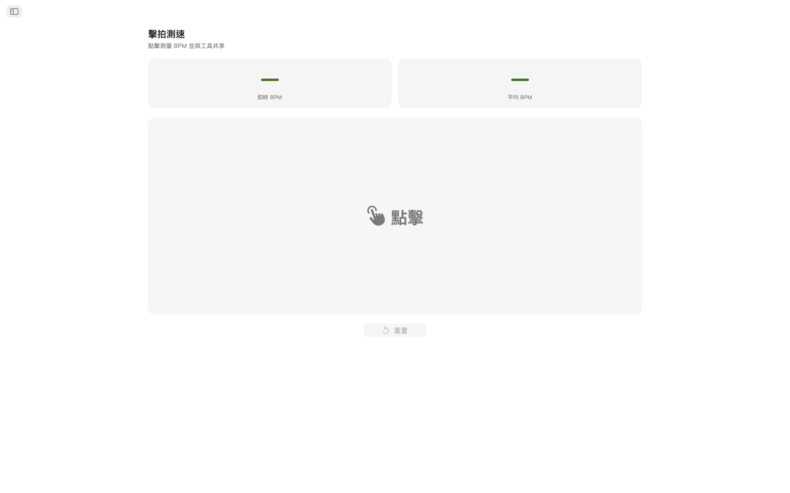
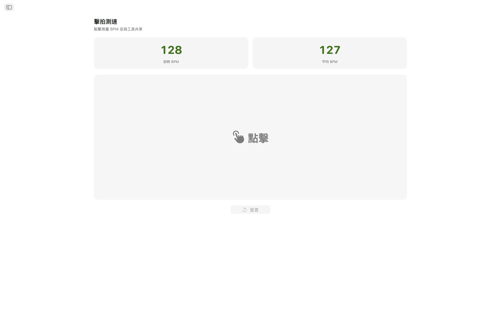
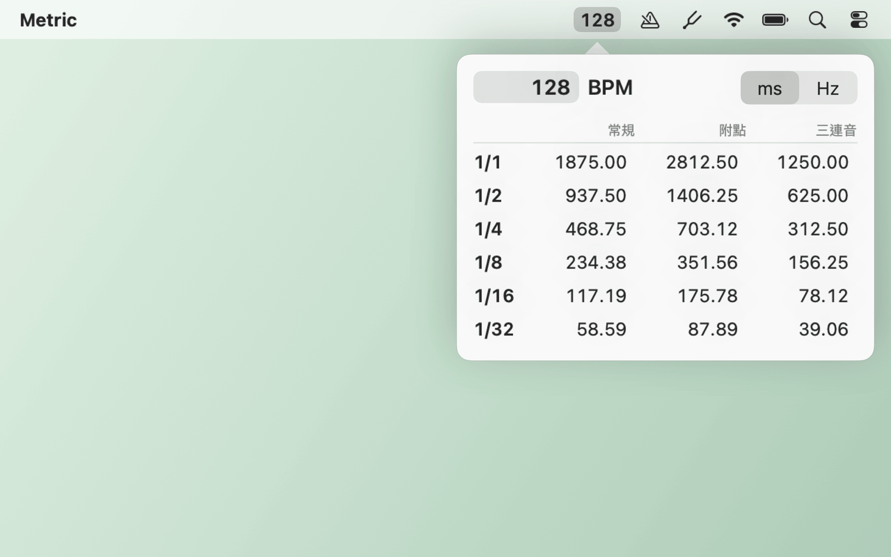
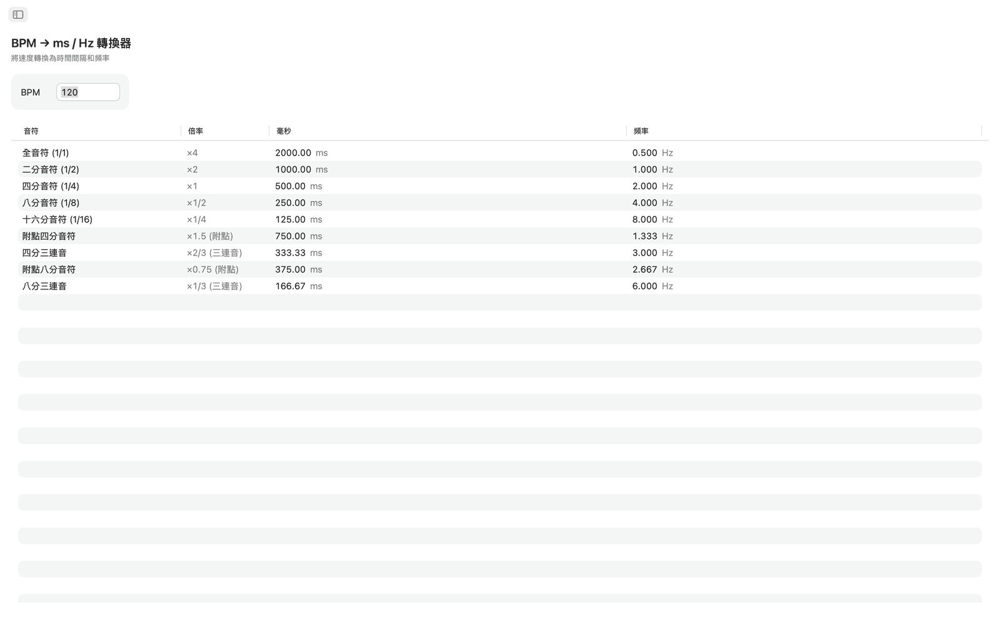
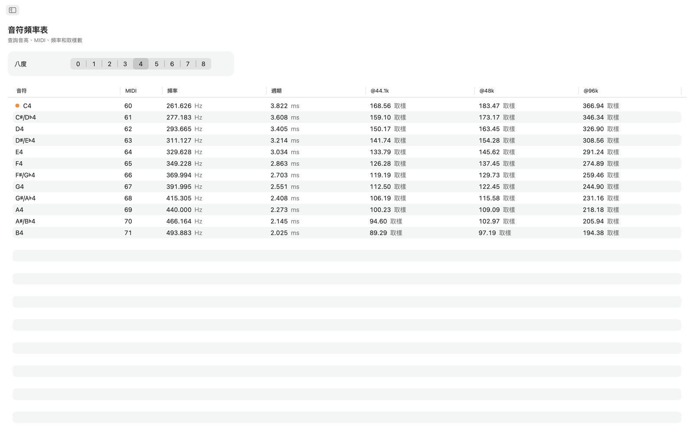
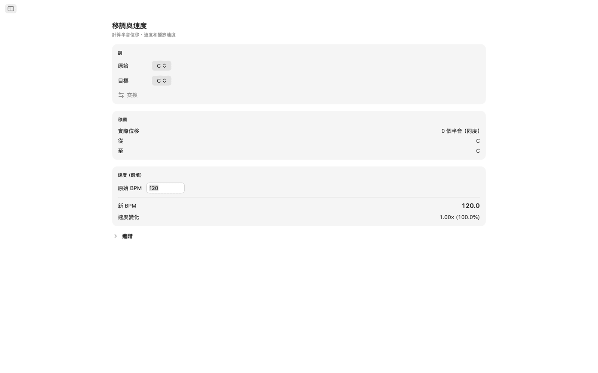
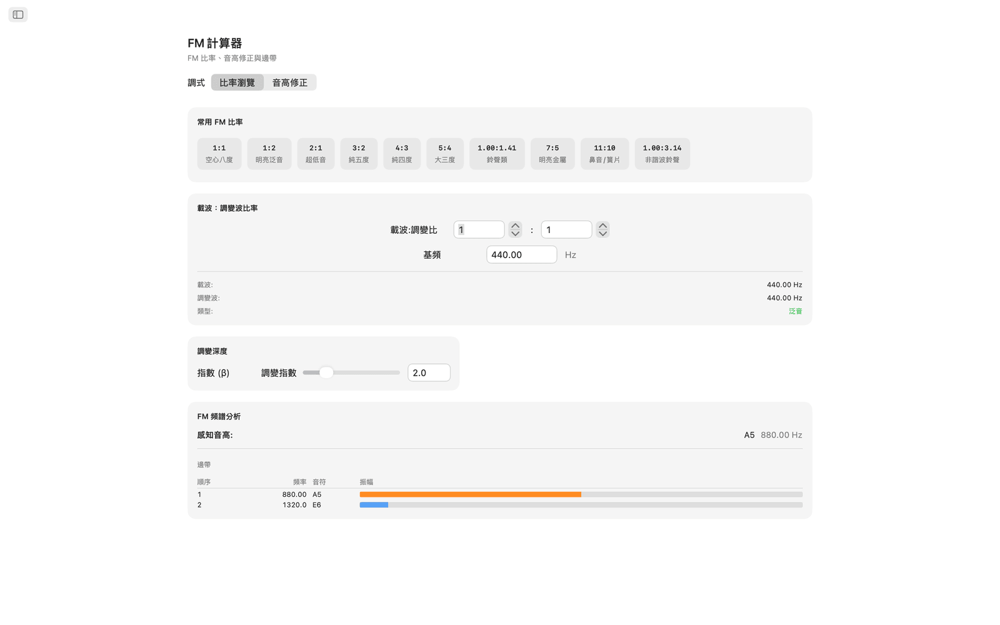
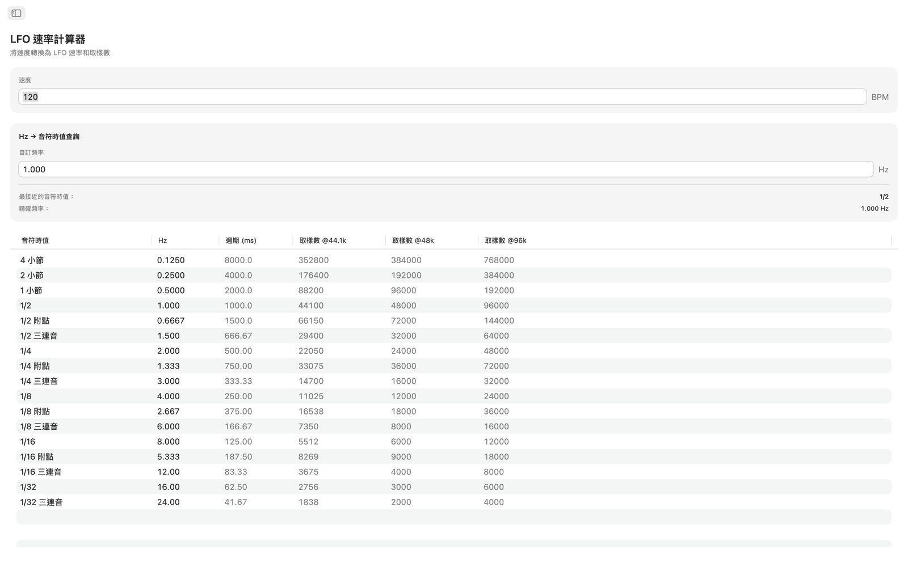
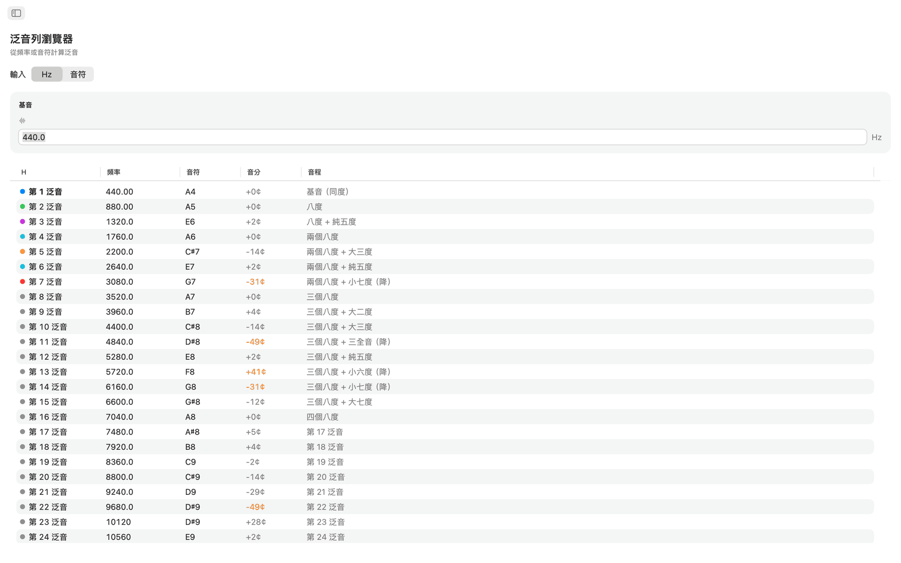
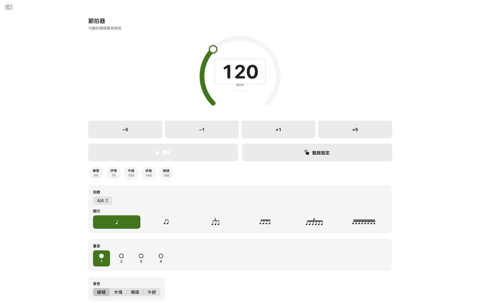
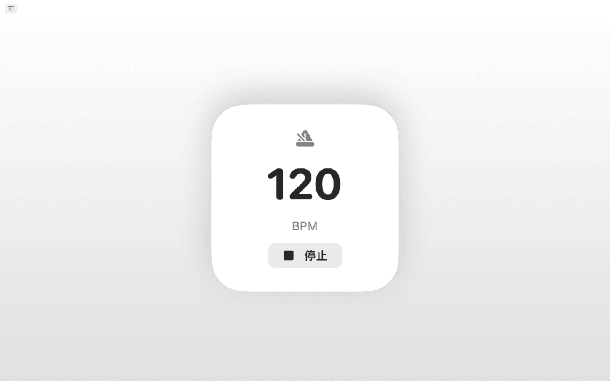
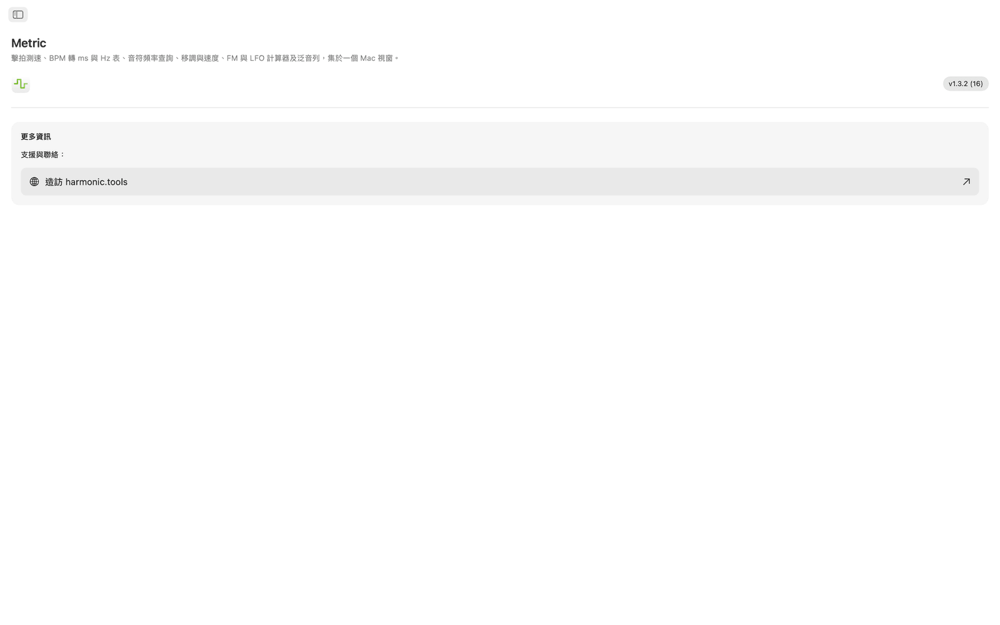
功能特色
- 節拍器有速度轉盤、點擊設定速度、拍號、細分和視覺節拍指示器。
- 點擊大型擊拍區域即可測量速度。Metric會顯示最近一次點擊的BPM，以及最多八次點擊的移動平均值，任一讀數都能一鍵送進BPM轉換器、移調或LFO速率工具。
- BPM → ms / Hz轉換器輸入速度後，會列出全音符、二分音符、四分音符、八分音符和十六分音符的基本、附點和三連音值。每行都有毫秒和Hz頻率，設定延遲、殘響預延遲或側鏈時間時不必另外按計算器。
- 音符頻率表列出從C0到B8的全部108個半音音符。每個音符顯示MIDI編號、Hz頻率、毫秒週期，以及44.1 kHz、48 kHz和96 kHz的取樣數。中央C有標記。基準為A4 = 440 Hz。
- 移調時選擇原調和目標調，即可看到半音偏移、音程名稱和DAW的移調值。輸入原始BPM後，Metric會算出新速度和播放速度比率。音分滑桿的範圍是±100，速度滑桿涵蓋兩個八度（±24半音）。
- FM計算器有兩種模式。比率探索器依基頻設定載波和調變器比率，並提供十種FM預設，從空心八度（1:1）到非諧波鈴聲（1:π）。音高校正則反向運作：選擇目標音符，即得精確的載波和調變器頻率。兩種模式都有邊帶表，列出最多十個分音的頻率、最近音符和色彩編碼的振幅，並由調變指數滑桿控制。
- LFO速率計算器把任意BPM轉換成17種音樂細分的LFO速率，從四小節到1/32三連音。每行顯示Hz、毫秒週期，以及44.1 kHz、48 kHz和96 kHz的每週期取樣數。反向查詢可輸入任意Hz值，找出最接近的音樂細分，並顯示誤差。
- 泛音列探索器從頻率或任意音符開始，列出前32次泛音的頻率、最近音名、音分偏差和音程標籤。低階泛音以顏色標示，偏差大於30音分的也會標出，非諧波內容因此容易看出來。
共用的速度與調音基準
測一次速度後，BPM轉換器、移調和LFO速率都使用同一個即時BPM。音符頻率、FM計算器和泛音都以A4 = 440 Hz為基準。
Siri、Shortcuts與小工具
可以請Siri啟動或停止節拍器、設定BPM、擊拍測速、將BPM轉換為毫秒、查詢音符頻率或移調速度。每個工具也都是Shortcuts動作，BPM小工具讓速度顯示在Notification Center中。
選單列工具
無需開啟App，即可在選單列擊拍測速。按右鍵可查看延遲時間（ms或Hz），還能輸入任意速度。節拍器和音高項目為選用，另有僅選單列模式與登入時開啟的設定。
在桌面上
- 完全離線運作。無需帳號、無廣告、無追蹤
- 原生macOS應用程式，側邊欄導覽
- 支援深色模式，跟隨系統外觀
- 取樣數以44.1 kHz、48 kHz和96 kHz顯示
- 可調整視窗大小，與DAW並排使用
輔助使用
支援VoiceOver（旁白）與語音控制，也可使用鍵盤操作：方向鍵與空白鍵。
Metric可免費試用7天。試用結束後，完整功能為一次性購買，不採訂閱制。